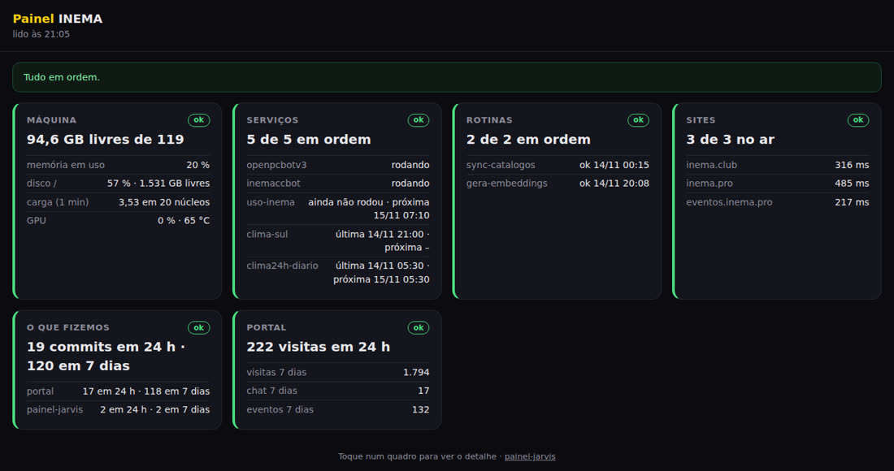

You only find out that the backup stopped, the bot crashed, or the site went down when someone complains. With painel-jarvis, you ask your AI assistant (INTELECTO, Claude Code, Codex…) and it shows what’s running and what’s down.
People who leave things running on their computer (an assistant, a backup, a bot that publishes videos, a website) usually only find out something broke when someone complains. painel-jarvis is a small Python program that checks all of this for you: your machine’s memory and disk, services, routines, sites, and what changed in your projects. You can view it in a dashboard that opens on your phone like an app, or simply ask your AI assistant, "what failed today?" You need a computer with Linux and Python 3.11 or newer.
The problem
Things stop silently
A computer that works on its own doesn’t warn you when it stops. It just stops.
🔇 The service went down overnight
The assistant that replies on Telegram froze at 3 a.m. You only notice in the late afternoon, when the silence starts to feel strange.
🗓️ The routine failed and no one noticed
The backup or automatic publishing failed, but the error stayed hidden in a log file no one opens.
💾 The disk filled up gradually
Day after day, the disk kept filling up. Once it reaches 100%, everything stops at once, and the fix takes more work.
painel-jarvis checks these things with every query and marks in yellow what needs attention and in red what failed. It always shows a word alongside the color ("attention", "failure"), not just the color.
Three ways to use it
One dashboard, three doors
It’s the same dashboard inside. You choose how to check it.
1
Ask your Jarvis
If you use INTELECTO, INEMA’s Python assistant, the dashboard becomes a plugin: it gets three new tools and answers "what failed today?" with real data. how to connect ↓
2
Use it with any AI agent
The dashboard also speaks MCP, the standard "outlet" agents like Claude Code, Codex, and Cursor use to call tools. Any Jarvis that speaks MCP can check the dashboard the same way. how to connect ↓
3
On your phone, as an app
A password-protected page with cards that you install on your phone’s home screen as an app (the technical name is PWA: a website you can install as an app). It opens full-screen, refreshes itself every minute, and says "no connection" when the internet goes down. how to connect ↓
You: what failed today?
Your Jarvis: Needs attention: routine backup: error on the last run (14/11 03:00) · disk / at 91%.
What it looks like
The real dashboard
Screenshots of the dashboard running on INEMA’s computer on 14/11/2026. Tap a card to open its details.

On a computer: six panels. The banner at the top says "All clear" or lists what needs attention. (The program’s messages and the web panel are in Portuguese for now.)On a phone: one panel at a time, installable as an app (Chrome → ⋮ → Install app).
Technical section
The kit: for those who want to install and connect it
The technical section starts here: the panels, installation, and step-by-step instructions. You don’t need this part to understand what came before.
What it is
Six panels, all read-only
Each section of the painel.toml file enables a panel. The dashboard never changes anything on your machine: it only reads.
Panel
What it shows
Turns yellow/red when
maquina
memory, disk, load, GPU (if nvidia-smi is available)
less than 10% of memory is free; disk is at 90% or more
servicos
systemd services and timers (Linux’s "service manager")
a service failed, a timer stopped, or a service doesn’t exist
rotinas
cron routines or scripts, based on the log file
an error appears in the latest log lines, or it hasn’t run within the expected time
sites
a lightweight check of each site
a site is down
git
what we did: commits from the past 24 hours and 7 days per project
—
uso
numbers from any JSON file written by another script (visits, sales, queue)
the file hasn’t changed within the expected time
The uso panel connects to your numbers: your script collects them and writes a JSON file; the dashboard only reads that file. That way, the dashboard doesn’t need any service keys.
How it works
One core, three outputs
Collectors read the machine; the core brings everything together into cards; each door delivers the same cards in its own way. If a collector breaks, its card shows "no data" and the rest keeps working.
No extra libraries: the dashboard only uses what comes with Python.
Linux + Python 3.11+
Ubuntu 24.04 comes with Python 3.12. On Ubuntu 22.04 (Python 3.10), install a newer Python first: sudo apt install python3.11 and then pipx install --python python3.11 ….
python3 --version
pip
To install the package directly from GitHub.
python3 -m pip --version
Optional
INTELECTO v2.3+ for the plugin; an agent with MCP; a tunnel (Cloudflare Tunnel or Tailscale) to open the dashboard away from home.
User guide · step by step
From scratch to "what failed today?"
The commands below are the actual commands used in the project. On a new machine, it takes about 10 minutes.
1
Install the package
The simplest way is with pipx, which installs Python programs without cluttering the system and puts the painel-jarvis command in ~/.local/bin (the same path used by the service in step 7). On Ubuntu: sudo apt install pipx, then pipx ensurepath (close and reopen the terminal).
pipx installgit+https://github.com/inematds/painel-jarvispainel-jarvis --version # 1.0.1# alternatively, in a virtual environment:python3 -m venv ~/.venv-painel && source ~/.venv-painel/bin/activate
pip installgit+https://github.com/inematds/painel-jarvis# (in the venv, the command is at ~/.venv-painel/bin/painel-jarvis: use this path in step 7)
2
Choose what to monitor
The example already enables the machine panel; the other sections are commented out, with sample names. To enable one, remove the # at the start of its lines and replace the names with your own services, logs, sites, and folders.
One line per panel, followed by only the items that need attention. The symbol shows the status: ✓ all clear, ! attention, ✕ failure, ? no data (the card couldn’t read its data, e.g., the JSON for the uso card doesn’t exist yet). Did you enable a new section? Run it again to check. (The program’s messages and the web panel are in Portuguese for now.)
painel-jarvis cartoes
# Painel do Jarvis: 1 ponto(s) de atenção
# ✓ Máquina: 94,6 GB livres de 119
# ! Serviços: 1 de 2 em ordempainel-jarvis falhas
4
Connect to INTELECTO
The plugin needs to use the same Python environment as INTELECTO v2.3 or newer: install both in the same virtual environment, or, if INTELECTO was installed with pipx, use pipx inject intelecto git+https://github.com/inematds/painel-jarvis. Then enable the plugin by name. It adds painel_resumo, painel_falhas, and painel_quadro. A plugin never replaces the built-in tools.
INTELECTO_PLUGINS=painel intelecto# or, permanently: "plugins": ["painel"] in ~/.intelecto2/config.json
5
Or connect it to any agent with MCP
The dashboard runs as an MCP server in the terminal (stdio). In Claude Code, it takes one line; in other agents, use the painel-jarvis mcp command in the MCP server configuration.
claude mcp add painel -- painel-jarvis mcp
# then, in the agent: "use the panel and tell me what failed today"
6
Open the dashboard in your browser
Without a password, it only accepts connections from the same machine: even --bind 0.0.0.0 automatically falls back to 127.0.0.1 and displays a warning in the terminal. To open it from another device, set a password (12 characters or more; stored in ~/.config/painel-jarvis/senha.json) and listen on the network.
painel-jarvis web # http://127.0.0.1:8790/painel-jarvis senha
painel-jarvis web --bind 0.0.0.0 # on the home network, with login
7
Keep it running and install it on your phone
Set the password first (step 6): without one, the service only listens on 127.0.0.1 and your phone can’t open it. The block below creates the service file and enables it; enable-linger makes the service start at boot and keep running after you log out. To open it away from home, put a tunnel with HTTPS in front of port 8790. On your phone: Chrome → ⋮ → Install app (on iPhone: Safari → Share → Add to Home Screen).
mkdir -p ~/.config/systemd/user
cat > ~/.config/systemd/user/painel-jarvis.service <<'FIM'
[Unit]
Description=painel-jarvis web
[Service]
ExecStart=%h/.local/bin/painel-jarvis web --bind 0.0.0.0
Restart=on-failure
[Install]
WantedBy=default.target
FIM
systemctl --user daemon-reload
systemctl --user enable --now painel-jarvis
loginctl enable-linger $USER
journalctl --user -u painel-jarvis -n 5 # it should say "com senha"
Security
Read-only, and password-protected off the machine
🔒 Password and session
Password stored as scrypt; a cookie JavaScript can’t read (HttpOnly); five wrong attempts lock access for 15 minutes. Without a password, the dashboard only listens on 127.0.0.1.
👁️ Read-only
The tools don’t execute anything the agent chooses; in MCP, they’re marked as read-only. The service worker stores no data: without a network connection, it shows "no connection".
🌐 HTTPS through a tunnel
The dashboard doesn’t provide HTTPS on its own. For internet access, use a tunnel with HTTPS (Cloudflare Tunnel, Tailscale).
🔑 No service key needed
The dashboard doesn’t call third-party APIs. Numbers from external services come through the uso panel, from a JSON file your script writes.
Roadmap
What’s next
v1.0
TodaySix panels, INTELECTO plugin, MCP server, password-protected installable web dashboard.
next
Active alertSend an alert to Telegram when a panel turns red, instead of waiting for someone to ask.
later
More panelsDocker containers and task queues, in the same card format.